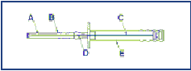

RÉSUMÉ DES CARACTÉRISTIQUES DU PRODUIT
ANSM - Mis à jour le : 12/04/2010
Trigonist 9,45 mg, implant pour voie sous-cutanée
2. COMPOSITION QUALITATIVE ET QUANTITATIVE
Acétate de buséréline....................................................................................................................... 9,90 mg
Quantité correspondante à buséréline................................................................................................ 9,45 mg
Pour un implant de 49,50 mg composé de 3 bâtonnets identiques
Pour la liste complète des excipients, voir rubrique 6.1.
Implant.
Chaque implant est constitué de trois bâtonnets de couleur blanc crème.
4.1. Indications thérapeutiques
Traitement du cancer de la prostate non localisé, hormono-dépendant.
TRIGONIST n'est cependant pas indiqué après orchidectomie bilatérale dans la mesure où son administration ne permettrait pas d'obtenir une réduction supplémentaire de la testostéronémie.
4.2. Posologie et mode d'administration
TRIGONIST est destiné au traitement au long cours du cancer de la prostate non localisé.
Le contenu de la seringue (implant composé de trois bâtonnets, correspondant à 9,45 mg de buséréline) est injecté par voie sous-cutanée dans la paroi abdominale tous les trois mois (voir rubrique 6.6). L'intervalle de trois mois entre les injections peut occasionnellement être augmenté de trois semaines au maximum.
Avant l'injection, une anesthésie locale peut être effectuée.
Cinq jours environ avant la mise en route du traitement par TRIGONIST un antiandrogène sera administré (voir rubrique 4.4).
TRIGONIST ne doit pas être administré aux patients qui présentent une hypersensibilité à la buséréline ou à l'un de ses excipients et aux analogues de la LH-RH.
4.4. Mises en garde spéciales et précautions d'emploi
Chez les patients ayant des métastases connues, par exemple des métastases vertébrales, l’association d’un antiandrogène est essentielle pour prévenir la survenue de complications telles que compression médullaire et paralysie liées à une évolution transitoire de la tumeur et de ses métastases (voir rubrique 4.8).
La réponse au traitement peut être évaluée sur les taux sériques d'antigène spécifique de la prostate (PSA) et de testostérone. La testostéronémie augmente au début du traitement, puis elle diminue sur une période de deux semaines. Après deux à quatre semaines de traitement, la testostéronémie atteint le niveau de castration. L’absence d’amélioration du taux de PSA ou des signes cliniques, malgré l’effondrement des taux de testostérone, est révélatrice d’une tumeur hormono-résistante.
Les patients à métastases vertébrales comme ceux à risque de complications neurologiques ou d’obstruction urinaire, devront être étroitement surveillés durant les premières semaines de traitement si celui-ci n’est pas associé à une administration concomitante d’antiandrogène.
Chez les patients hypertendus, la pression artérielle sera mesurée régulièrement (risque de poussée hypertensive).
Chez certains patients traités par un analogue de GnRH une modification de la tolérance au glucose peut être observée (voir rubrique 4.8).
Chez les patients diabétiques, la glycémie sera contrôlée à intervalles réguliers (risque de déséquilibre du diabète).
L’utilisation des analogues de la LHRH peut être associée à une diminution de la densité osseuse pouvant induire une ostéoporose et une augmentation du risque de fracture osseuse (voir rubrique 4.8). Il est recommandé de surveiller régulièrement la densité minérale osseuse (DMO) et de prendre des mesures préventives pendant la durée du traitement, afin de prévenir toute ostéopénie/ostéoporose.
Les patients ayant des antécédents de dépression seront surveillés étroitement et traités si nécessaire (risque de récidive ou d'aggravation de la dépression).
4.5. Interactions avec d'autres médicaments et autres formes d'interactions
Aucune étude spécifique d'interaction n'a été conduite.
Pendant le traitement par buséréline, l’effet des médicaments antidiabétiques peut être atténué (voir rubrique 4.8).
En raison des indications, TRIGONIST ne doit pas être administré chez la femme.
4.7. Effets sur l'aptitude à conduire des véhicules et à utiliser des machines
Certains effets indésirables (par exemple des vertiges) peuvent altérer la capacité de concentration et de réaction du patient et donc représenter un risque dans les situations où ces facultés sont particulièrement importantes (conduite d'un véhicule, utilisation de machines, ou toute autre situation de même nature).
La mise en route du traitement s'accompagne généralement d'une élévation transitoire de la testostéronémie qui peut entraîner une activation temporaire de la tumeur, associée aux réactions suivantes :
· survenue ou aggravation des douleurs osseuses chez les patients présentant des métastases,
· troubles neurologiques secondaires à une compression médullaire, comme par exemple une faiblesse musculaire au niveau des membres inférieurs,
· troubles de la miction, hydronéphrose ou stase lymphatique,
· thrombose avec embolie pulmonaire.
Ces réactions peuvent dans l'ensemble être évitées par l'administration concomitante d'un antiandrogène au début du traitement par la buséréline (voir également rubrique 4.4).
Les fréquences sont définies selon la convention MedDRA suivante;
Très fréquent (³1/10) ; Fréquent (³ 1/100, <1/10 ); Peu fréquent (³1/1000, <1/100) ; Rare (³1/10 000, <1/1000); Très rare (<1/10 000), fréquence indéterminée.
Investigations
Peu fréquent : élévation des enzymes hépatiques (transaminases), modification du poids.
Rare : modification des lipides sanguins, élévation de la bilirubinémie.
Affections cardiaques
Rare : palpitations.
Affections hématologiques et du système lymphatique
Très rare : thrombopénie, leucopénie.
Affections du système nerveux
Fréquent : céphalées.
Peu fréquent : somnolence, vertiges.
Rare : troubles du sommeil, troubles de la mémoire et difficultés de concentration.
Des cas isolés de paresthésie ont été observés avec d’autres formes pharmaceutiques de buséréline.
Affections oculaires
Très rare : troubles de la vision (par exemple, vision trouble) ou une sensation de tension rétro-oculaire.
Affections de l’oreille et du labyrinthe
Très rare : acouphènes, troubles de l’audition.
Affections gastro-intestinales
Peu fréquent : constipation.
Rare : nausées, vomissements, diarrhée.
Affections de la peau et du tissu sous-cutané
Rare : modification du cuir chevelu et de la pilosité.
Troubles de l’appareil locomoteur
Très rare : gêne musculo-squelettique et douleur (incluant douleur/raideur des épaules chez la femme).
L’utilisation des agonistes de la LH-RH peut être associée à une diminution de la densité osseuse et peut conduire à une ostéoporose et à une augmentation du risque de fracture osseuse. Le risque de fracture augmente avec la durée du traitement.
Troubles du métabolisme et de la nutrition
Très rare : polydipsie, modification de l’appétit, réduction de la tolérance au glucose pouvant entraîner un déséquilibre glycémique chez les patients diabétiques).
Tumeurs bénignes ou malignes (incluant kystes et polypes)
Très rare : des cas de développement d'adénomes hypophysaires ont été décrits lors des traitements par agonistes de la LH-RH y compris avec la buséréline.
Même avec un traitement concomitant anti-androgène, une augmentation transitoire modérée des douleurs cancéreuses.
Affections vasculaires
Fréquent : bouffées de chaleur.
Rare : poussée hypertensive chez les patients hypertendus.
Troubles généraux et réaction au site d’injection
Fréquent : douleur ou autre réaction locale (ex : rougeur, gonflement) au point d'injection.
Peu fréquent : œdème (discret) de la cheville et des membres inférieurs, asthénie.
Très rare : altération de l’état général.
Affections du système immunitaire
Peu fréquent : réactions d'hypersensibilité de type d'érythème, démangeaisons, éruptions (y compris urticariennes).
Rare : réactions anaphylactiques évoluant vers un bronchospasme et une dyspnée pouvant évoluer dans des cas isolés vers un choc anaphylactique/ anaphylactoïde (et susceptibles d’imposer l’ablation chirurgicale de l’implant).
Affections des organes de la reproduction et du sein
Fréquent : impuissance, atrophie testiculaire.
Peu fréquent : gynécomastie (non douloureuse).
Affections psychiatriques
Fréquent : baisse de la libido.
Rare : nervosité, instabilité émotionnelle, anxiété, dépression (celle-ci pouvant apparaître ou s’aggraver).
La plupart des effets cités ci-dessus sont directement ou indirectement liés à la réduction de la testostéronémie par la buséréline (symptômes de déprivation androgénique).
Il n’a pas été observé d’ intoxication ou de surdosage avec la buséréline.Les effets potentiels attendus en cas de surdosage en buséréline sont les mêmes que les effets indésirables observés en cas d'administration de quantités normales du produit, comme asthénie, céphalées, nervosité, bouffées de chaleur, vertiges, nausées, douleurs abdominales, œdèmes des membres inférieurs, mastodynie , ainsi qu’une réaction locale au site d’injection (voir rubrique 4.8). Le traitement d'un éventuel surdosage sera symptomatique.
5. PROPRIETES PHARMACOLOGIQUES
5.1. Propriétés pharmacodynamiques
Classe pharmaco-thérapeutique : analogue de l’hormone entraînant la libération des gonadotrophines Code ATC : L02A E01
La buséréline est un analogue très puissant de l'hormone naturelle de libération de la gonadotrophine (gonadoréline, GnRH, LH-RH). L'effet pharmacologique initial de la buséréline consiste en une stimulation de la libération de gonadotrophines et de la sécrétion de testostérone. Cet effet initial est ensuite suivi d'une diminution progressive de la testostéronémie jusqu'à des taux de castration.
La poursuite du traitement par la buséréline entraîne l'inhibition de la libération de gonadotrophines, mais elle n'influence pas directement la sécrétion des autres hormones hypophysaires (hormone de croissance, prolactine, ACTH, TSH). La sécrétion des stéroïdes surrénaliens reste, quant à elle, inchangée.
En termes de suppression de stimulation de la tumeur par la testostérone, la buséréline est aussi efficace que l’orchidectomie dans le traitement du cancer de la prostate
5.2. Propriétés pharmacocinétiques
La buséréline circulante est essentiellement sous forme inchangée. La liaison aux protéines est d'environ 15 %. Les données précliniques montrent que la buséréline s'accumule essentiellement dans le foie, les reins et le lobe antérieur de l'hypophyse (qui est l'organe cible). La buséréline et ses métabolites inactifs sont excrétés par voie rénale et les études animales ont également mis en évidence une certaine élimination biliaire. Les études in vitro ont montré que la buséréline est inactivée par les peptidases (pyroglutamyl peptidase et endopeptidases de type chymotrypsine) dans le foie et les reins. Au niveau de l'hypophyse, la buséréline liée aux récepteurs est inactivée par des enzymes membranaires.
5.3. Données de sécurité préclinique
Les observations précliniques sont conformes aux effets pharmacologiques et endocrinologiques connus de l'acétate de buséréline. Aucun potentiel génotoxique n'a été mis en évidence lors des tests classiques réalisés in vitro et in vivo. Les études animales ont montré que les implants d'acétate de buséréline sont bien tolérés localement.
Sans objet dans la mesure où le produit est présenté avec un applicateur spécial..
3 ans.
6.4. Précautions particulières de conservation
A conserver à une température inférieure à +30°C.
6.5. Nature et contenu de l'emballage extérieur
49,50 mg d’implant constitué de 3 bâtonnets, en seringue préremplie, contenue dans un applicateur jetable en propionate de cellulose et acier inoxydable, le tout, emballé dans un sachet (feuille complexe de polyéthylène téréphtalate, aluminium et polyéthylène basse densité).
Boîte de 1 ou 2 seringues préremplies.
Toutes les présentations peuvent ne pas être commercialisées.
6.6. Précautions particulières d’élimination et de manipulation
Attention : pour éviter que les bâtonnets à implanter ne tombent de l'aiguille (A), tenir l'applicateur à la verticale, pointe en haut, jusqu'au moment de la piqûre.

A. : aiguille d’injection
B. : embout protecteur de l’aiguille
C. : applicateur
D. : implant
E. : embout protecteur de l’applicateur
1. Après avoir ouvert la boîte et sorti l'applicateur de son emballage, s'assurer que les implants sont visibles dans le regard de la poignée. Au besoin, tapoter du doigt le capuchon protecteur de l'aiguille pour les remettre en place dans le regard.
2. Désinfecter l'endroit de l'injection sur un côté de la paroi abdominale. Puis, après avoir ôté l'étui protecteur du piston (E), retirer le capuchon protecteur de l'aiguille (B).
3. Faire un pli dans la peau et enfoncer l'aiguille d'environ 3 cm dans le tissu sous-cutané en tenant l'applicateur à l'horizontale ou la pointe légèrement vers le haut juste avant la piqûre. Retirer l'applicateur d'environ 1 à 2 cm avant d'injecter les implants.
4. Enfoncer le piston à fond pour injecter les implants dans le tissu sous-cutané. Appuyer sur le canal d'injection pendant le retrait de l'aiguille pour retenir les implants dans le tissu.
5. Pour s'assurer de l'injection des trois implants, contrôler que le bout du piston est visible à la pointe de l'aiguille.
7. TITULAIRE DE L’AUTORISATION DE MISE SUR LE MARCHE
Sanofi-Aventis France
1-13, boulevard Romain Rolland
75014 Paris
8. NUMERO(S) D’AUTORISATION DE MISE SUR LE MARCHE
· 348 419-7 : 49,50 mg en seringue préremplie montée avec aiguille.
9. DATE DE PREMIERE AUTORISATION/DE RENOUVELLEMENT DE L’AUTORISATION
[à compléter par le titulaire]
10. DATE DE MISE A JOUR DU TEXTE
[à compléter par le titulaire]
Sans objet.
12. INSTRUCTIONS POUR LA PREPARATION DES RADIOPHARMACEUTIQUES
Sans objet.
Liste I.